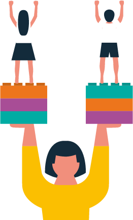

#EducaciónConEquidadDeGénero


Una educación no sexista construye los cambios que queremos ver en el mundo.
Dado que entendemos que no se puede construir verdadera calidad de la educación si no tomamos en cuenta las prácticas discriminatorias que ponen en peligro a las comunidades y sus posibilidades de desarrollo, el Ministerio de Educación hace eco de la necesidad de posicionarse como motor de cambio, escuchando y priorizando la demanda ciudadana para erradicar esta desigualdad arbitraria.
Las prácticas que fomentan ambientes libres de desigualdad de género son cruciales para dejar de relegar a las niñas a ciertos espacios y a los niños a otros. La labor de profesoras y profesores contribuye a la formación de un sistema educacional que levante a cada estudiante por igual, potenciando sus capacidades y dándole alas a sus talentos.
Desarrollar un sistema educacional que considere los distintos intereses y formas de aprender de cada niño o niña es fundamental, por lo que hemos dispuesto una serie de medidas para avanzar hacia una educación con equidad de género. Este objetivo requiere del compromiso de cada integrante de la comunidad, por lo que extendemos la invitación a todas y todos a que sean parte de esta transformación educativa. ¿Se suman al desafío?